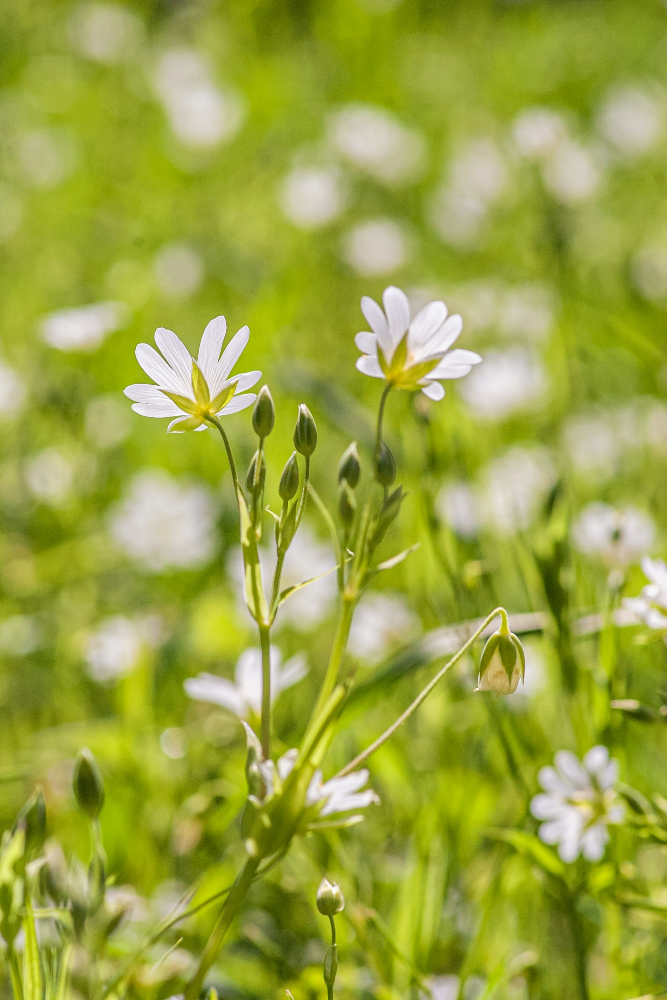

I design systematic consumer experiences. I turn messy signals from people and data into ideas, then find the thread between what people need, what the numbers are saying, and what we can actually build next.
- CURRENTLY
- Sr. Product Designer building loyalty experience @ American Airlines
One-line description of the project.
One-line description of the project.
A short note about what this experiment explores.
One-line description of the project, long enough to wrap onto a second line.
One-line description of the project.
One-line description of the project.
A short note about what this experiment explores.
One-line description of the project.

CURIOSITY
BUILDS
BETTER
THINGS.
Janice Khang.
Product designer
in Dallas, Texas.
PLACES
IDEAS
IN BETWEEN.
Thoughtful things.
For real life.
I turn complex problems into digital experiences that feel clear, useful, and considered. The smallest interaction deserves as much care as the bigger picture.
LOOKING.
A little room
to wander.
Motion, small experiments, and things made by hand. I like finding the unexpected in something ordinary.
UNFOLDING.
Always a work in progress.